At Toll Bar Primary School we recognise that all pupils are entitled to have access to a broad
range of learning experiences which allow them to develop the knowledge, understanding,
skills and attitudes necessary for their self-fulfilment and to enable them to play a full part
as responsible citizens in the 21st Century. The curriculum aims to provide opportunities for
all pupils to learn and to achieve, irrespective of social background, culture, race, gender,
differences in ability and disabilities.
We aim to provide skills of literacy, numeracy, and information and communication
technology, helping them to develop enquiring minds and the ability to think rationally.
The curriculum also promotes pupils' spiritual, moral, social and cultural development and
supports them in developing principles for distinguishing between right and wrong. Pupils
are encouraged to think creatively and critically and to respect others and the environments
in which they live. The curriculum enables pupils to develop their physical skills and promotes their
personal and social well-being.
We believe that the curriculum should stimulate enjoyment of, and commitment to, learning as a
means of encouraging the best possible progress and the highest attainment for all pupils, preparing
them effectively for the next steps in their education.
Parents are kept up to date about the curriculum and topics by means of a Class newsletter which
includes individual pupil targets, sent out each term.
Topics for 2012/13
| Class |
Autumn Term |
Spring Term |
Summer Term |
| Maple |
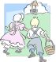
Traditional Stories |
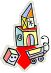
Toys |
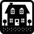
Homes and Houses |
| Sycamore |
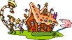
Fairyland |
Over the rainbow |
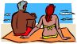
Seaside Rescue |
| Oak |
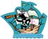
Around the World in 80 Days |
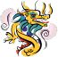
Mythical World |

Sea, Sand and Smugglers |
| Cedar |
|
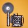
Life Through a Lens |
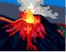
Volcanic Eruption |
| Willow |
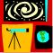
Journey into the unknown |
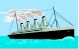
The Sinking Ship |
That's Entertainment |
| Chestnut |
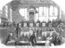 |
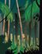
Ruthless Rainforests |
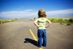
Facing the Future |